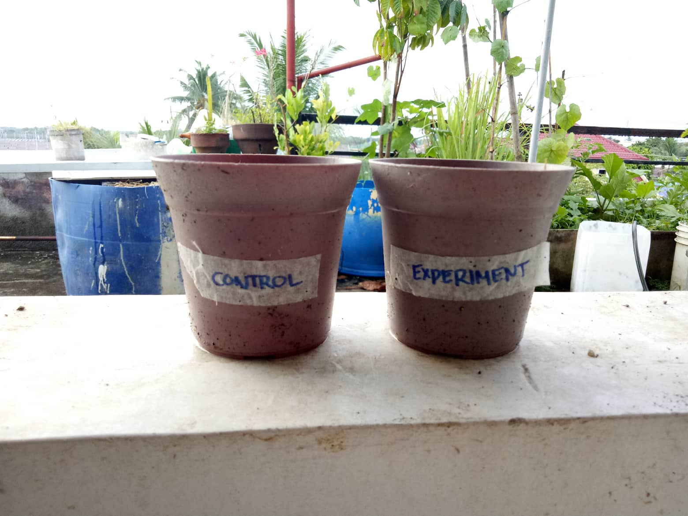

|
Knowing the effects of Composting to Kale Vegetables (Brassica Oleracea)
How will composting result in high production and faster growth of a Kale plant?
Compost (Banana Peels) once added to the Kale plant, will result in faster growth and higher production.
I. Background and Significance of The Study
Composting for the community and environment could help the plants like vegetables grow faster through using leftover wastes/biodegradables which could help the community have their own source of food. It benefits the environment through producing more plants which could help lessen the effects of global calamities like flooding.
By composting, our partner institution could grow and produce without wasting much money or materials. In addition, with the kale we are using to grow, they could benefit from its nutrients and it is much healthier than store bought products.
II. Methodology
| Independent Variable |
The independent variable is the addition of composting as fertilizers. |
| Dependent Variable |
The dependent variable is the growth and the production of the Kale plant. |
| Control Set-up |
Experimental Set-up |
| 1 and ½ cup of loam soil in a medium sized pot, sown with 1 Common Curly Kale seed and soaked with 50 ml of water after but without the banana peel. "Controlled Set-up" is also written on scotch tape and written with a marker to be taped on the pot as a label. |
1 and ½ cup of loam soil in a medium sized pot, also sown with 1 Common Curly Kale seed and soaked with 50 ml of water after but with the banana peel added for this experimental set-up. "Experimental Set-up" is written on scotch tape and written with a marker to be taped on the pot as a label. |
III. Visual Documentation of Initial SIP Set-up
A. Preparation of the composting materials and equipment needed

B. Planting control and experimental set-up replicates
C. Adding compost (banana peel) to the experimental set-up
Back to Top
|
Resources (Bibliography):
What is compost? (2022, July 20). Planet Natural.
https://www.planetnatural.com/composting-101/soil-science/what-is-compost/Composting At Home. (2022, July 7). US EPA.
https://www.epa.gov/recycle/composting-homeWikipedia contributors. (2022, October 26). Compost. Wikipedia.
https://en.wikipedia.org/wiki/CompostKale: Nutrition, Types, Cooking, and More. (2014, June 30). WebMD. Retrieved September 30, 2022, from
https://www.webmd.com/food-recipes/kale-nutrition-and-cooking
Vinje, E. (2018, May 7). Kale. Planet Natural. Retrieved September 30, 2022, from
https://www.planetnatural.com/growing-kale/
About the Web Designer: Karessa Bianca Silagan Galang
Karessa is the web designer of the SIP webpage. Karessa was born on February 18, 2008. She studies in Ateneo de Davao University with her peers. She is currently in grade 9 Borgia of group 2A. You can contact her via her email kbsgalang@addu.edu.ph
|